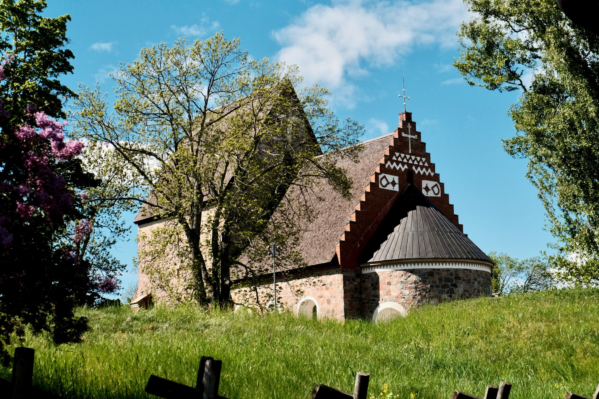
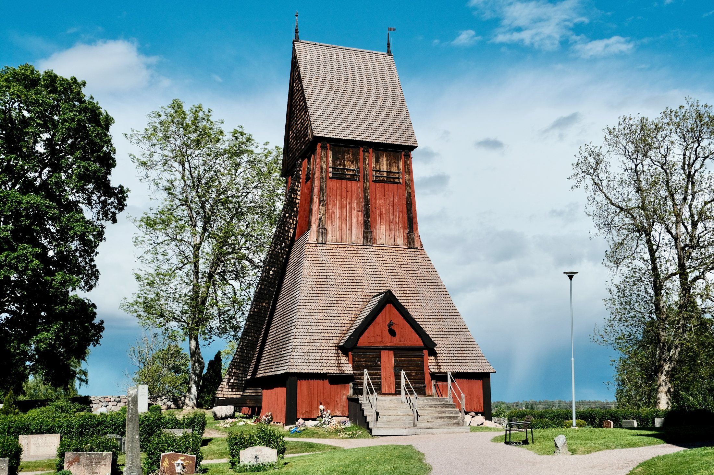

In Gamla Uppsala, the church stands on a landscape already full of memory. Before reaching the entrance, the place feels older than its walls: grass, trees, burial mounds, stone, and sky all seem to belong to the same historical field. The Church of Old Uppsala does not dominate the landscape aggressively. It rises quietly from it, carrying the weight of centuries with restraint.

The building’s stone walls, red brick details, and steep roof create a simple but powerful presence. From a distance, the church feels almost hidden among trees and grass. From the front, it becomes more direct: a medieval façade shaped by stone, shadow, and the clear blue light of spring.

Stone, wood, and memory
Beside the church, the wooden bell tower adds another material voice to the site. Its red timber and steep shingled roof contrast with the heavier stone of the church, but the two structures feel connected by purpose and place. Together, they create a small architectural ensemble: modest, historic, and deeply rooted in the churchyard around them.

One of the most striking details is Runestone U 978, built into the church wall. Its carved cross and runic inscription connect different layers of belief, language, and remembrance. The stone carries the words: “Sigvid, the England traveller, raised this stone in memory of Vidjärv, his father …” Set into the church itself, it becomes both an object of memory and part of the architecture.

At Old Uppsala, history is not held in a single monument. It is spread across stone, timber, grass, inscriptions, and the quiet spaces between them.
What makes the Church of Old Uppsala memorable is not only its architecture, but its position within a larger cultural landscape. The site feels like a meeting point between eras: Viking Age memory, medieval Christianity, rural Sweden, and the present-day visitor moving slowly through the churchyard. It is a place where history remains visible, but never loud.